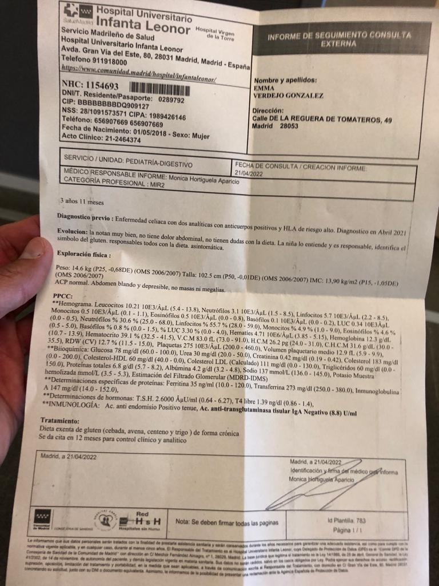

Peso = 17,40kg
Altura = 1,145m
Revisión especialista digestivo - 28-04-2023:
Peso = 16,20kg
Altura = 1,08m
Niveles negativos para gluten en analíticas.
Especialista dice que está en la media.
Puede ser alérgica a la lactosa? Le duele la tripita a veces después del desayuno de leche.
Observarla, pero esto se aprecia en las analíticas del digestivo
Llamará la madre para concertar cita analítica en un año y, 15 dias después tendrá la cita para los resultados.
Pediatra 10/03/2023:
Me dijo que había pasado toda la noche tosiendo. Ayer nada de tos, pero resulta que se quedó en casa porque había estado toda la noche tosiendo. El martes bien, pero tiene mocos habitualmente. Este año está siendo habitual. EMMA SE LO CONTÓ ELLA SOLITA A LA PEDIATRA Y DIJO QUE HABÍA VOMITADO ESA NOCHE FLEMA.
Quiero saber si hoy está bien, si ayer estaba bien y a qué puede deberse que de pronto le de fiebre, o tosa toda la noche, y al día siguiente no. Por si tiene algún problema respiratorio. ES PORQUE POR LA NOCHE, AL ESTAR TUMBADA Y NO PODER DESHACERSE DE MOCOS SE LE PUEDEN ACUMULAR DANDO LUGAR INCLUSO A FIEBRES. LAVAR FRECUENTEMENTE LAS FOSAS -COMO HACÍAMOS ANTES MÁS A MENUDO-
Es normal? Nos podemos quedar tranquilos? SÍ, ESTE AÑO ESTÁ SIENDO ASÍ PARA TODES.
También que le picaba el culete. PIEL SECA, AÚN NO SE HAN FORMADO CONCENTRACIONES DE RONCHAS, ASÍ QUE NO ES PREOCUPANTE. SI CONTINUASE A PESAR DE ECHARLE CREMITA U OBSERVASE QUE SE RASCA EN EL CULETE, ESPECIALMENTE POR LA NOCHE DURMIENDO, OJEAR A LA MAÑANA O A LA NOCHE SI TIENE LOMBRICES.
Pronunciación. SI NO NOS HAN AVISADO ES QUE HAN DESESTIMADO LA NECESIDAD DE QUE LA VEA EL LOGOPEDA, CONSIDERANDO SU DESARROLLO Y EL INFORME DE YAIZA COMO NORMAL.
Pediatra:
Siguiente revisión cuatro años: controlar percentil y estado de salud general, ya que desde febrero de 2020 no se le controló regularmente.
Revisión dificultad respiratoria (broncoespasmos al dormir): GRABAR (Pedir cita con cardióloga de la foto para) confirmar que el soplo que le ha oído Hugo es funcional.
Ha bajado de peso desde que sabemos que es celíaca y va a la guardería...
Olor fuerte en ocasiones.
Pedir receta para última dosis Bexero, luego con la enfermera telefónica y ahí concretaremos la cita fisica.
Peso = 14,5kg
Altura = 1,03m
Siguiente vacuna y revisión 6 años
Revisión especialista digestivo - 21-04-2022:
Llamará la madre para concertar cita analítica en un año y, 15 dias después tendrá la cita para los resultados.
Revisión pediatra digestivo celíaca:
Mejoría de resultados apreciable, ha bajado hasta los 8 cuando lo máximo es 7
Próxima visita en un año
Peso = 14,6kg
Altura = 1,025m

Teresa San Juan 28-03-2022:
En quince días pedir cita con grabación mientras duerme.
Pedir cita psicóloga solo para valoraciòn. ¿Cigna cubre?
Revisión especialista digestivo - 15-10-2021:
Llamarán para concertar cita analítica antes de 21 abril
Pediatra digestivo celíaca
Peso = 13,9kg - Percentil = 30
Altura = 1,05m - Percentil = 94
¿Ana? Pediatra sustituta de la Seguridad Social del Centro de Salud de Vallecas - 10-5-2021:
Es propensa a las flemas - Como yo vivo en el campo, cuando sale se recupera instantáneamente - Mucha agua
Peso = 13,0kg
Altura = 100cm
Hugo 3-2-2021:
En la próxima revisión avisar de que es celíaca. Minimizó que fuera a ser celíaca.
Hacer analítica de heces por lo de la tripita.
Ir retirando el chupete, sólo por la noche.
Pedir cita con cardióloga de la foto para confirmar que el soplo que le ha oído Hugo es funcional.
Necesitará ortodoncia.
Peso ~13,150kg
Altura = 92cm
SIguientes Consultas:
Tripita cuando come y labio. ¿ya ha tenido consulta? Sí ha tenido consulta: caca normal y come igual (si le doliera lloraría o pediria que la cogiera). Las legumbres, sobre todo si son enteras, le pueden causar muchas molestias.
Siguiente revisión: en tres meses, a los tres años. Presencial para controlar percentil y estado de salud general, ya que desde febrero de 2020 no se le controló.
Cita pediatra con grabación mientras duerme.
- Cita psicóloga solo para valoraciòn. ¿Aclarar si Cigna cubre psicología infantil?
- Calendario vacunas: hasta los cuatro años nada de vacunas. Le falta la última dosis de Bexero: primero pedir cita con la pediatra para receta, luego con la enfermera telefónica y ahí concretaremos la cita fisica.
En el centro vacunacion internacional de General Oraa quizas se puedan ver todas las dosis publicas o privadas que ha tenido la pequeña.